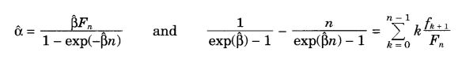

Par Šneidevinda modeli
Šneidervinda modelis ir diskrētais dinamiskais drošuma modelis. Tas pamatā ir ideja,
ka jaunākie dati par atteicēm dod precīzāko prognozi par sistēmas uzvedību nākotnē, salīdzinot ar agrākiem datiem.
Atteiču intensitāte var mainīties testēšanas gaitā un jaunākie dati labāk raksturo pašreizējo programmatūras drošuma
līmeni.
Modelis izmanto atteiču skaitu laikā vienībā vienāda garuma laika intervālos. Pieņemsim, ka tiek aplukoti n
laika
periodi. Šneidervinda modelī dati par katru no laika intervāliem ir vienādi svarīgi un drošuma novērtēšanā tiek ņemts vērā atteiču skaits katrā laika intervālā
,
kur n - intervālu skaits;
Fn - kļūmes summa;
Dati, kurus prasa Šneidevinda modelis, ir kļūdu skaits fi vienāda garuma n laika intervālos.
Modeļa pieņēmumi[1]:
-
Kumulatīvais kļūdu skaits M(t) laikā t atbilst Puassona procesam ar vidējas vērtības funkciju
μ(t).
Vidējas vērtības funkcijas pamatā ir ideja, ka gaidāmais identificēto atteiču skaits ir proporcionāls gaidāmām
neidentificēto atteiču skaitam.
Tas ir ierobežota nedilstoša laika funkcija
lim_{t\rightarrow\infty}\mu(t)=\frac{\alpha}{\beta}<\infty
,
kur α > 0 un β > 0;
-
Atteiču intensitātes funkcija ir eksponenciāli dilstoša:
\lambda(t) = \alpha e^{-\beta t}
Laika momentā t=0 atteiču intensitāte ir vienāda ar α jeb λ(0)=α. Jo lielāka ir
β vērtība, jo zemāka ir atteiču intensitate;
-
Atteiču skaits fi katrā testēšanas laika intervāla ir neatkarīgs;
-
Atteiču intensitāte ir proporcionāla neidentificēto atteiču skaitam;
-
Testēšana notiek vairākos laika intervālos ar vienādu fiksētu garumu l. Tas nozīmē, ka ti=il pie i= 1, 2, ..., n.
Resūrsi:
- ↩
Lyu MR, editor. Handbook of software reliability engineering. New York: McGraw-Hill, 1996. 850 p.